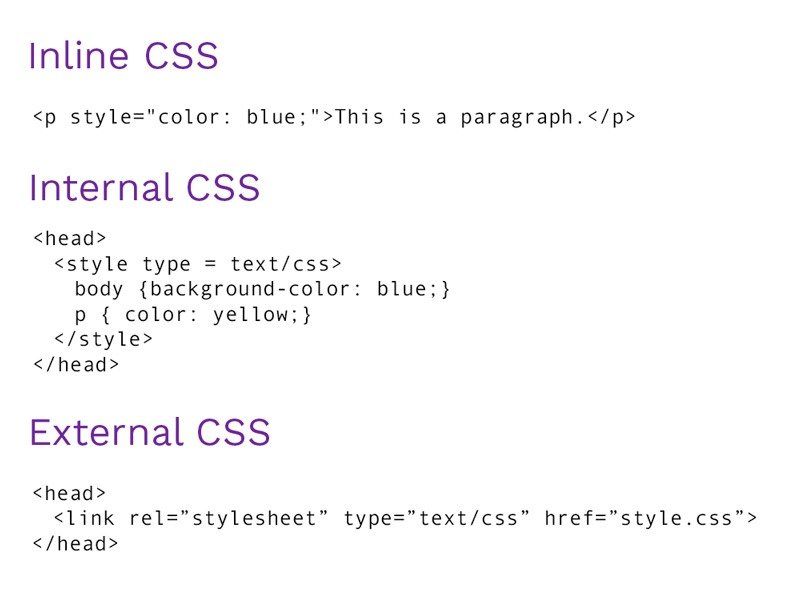

_- Inline CSS (not recommended and not used)
_-
3 ways - - - Internal Styling
-_
-_ External Styling
Internal Styling:
=> uses style tag (<style>) inside head tag (<head>).
External Styling:
=> Keep CSS rules in an external file with .css extension.
=> link it to HTML head section using <head>.

Preference:
Inline > Internal > External > Default
-> If same selector is defined in more than 2 external files that are linked to an HTML page.
-> Rules from most recent file will have precedence.
-> If a selector has same rule (property) with different values.
-> one at the last will be counted.
!important => when used with a rule, the rule cannot be overwritten.
cannot be considered if written once again.
If all your styles are !important, then none of your styles are important.